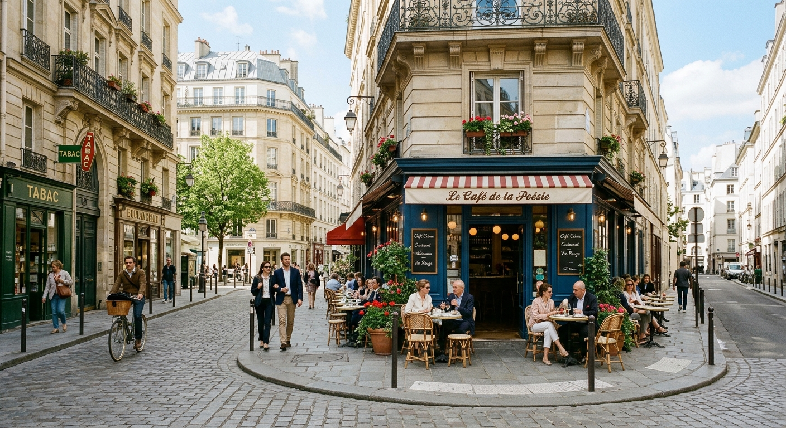

01 / DISCOVER
Where history meets modern life.
MORE THAN A DESTINATION
Paris is a city full of charm and surprises. One moment, you are walking along elegant boulevards, historic streets, and lively cafés. A few steps away, you might discover a quiet courtyard hidden among the buildings.
What makes Paris special is the way history and modern life exist side by side. From world-class museums to charming bakeries, every corner of the city has something new to explore.
"The best way to explore Paris is to simply wander."
